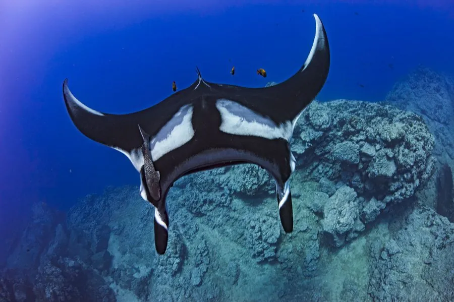

鱼类 · 动物界
双吻前口蝠鲼 Mobula birostris

现存最大的魟类，双翼展开可达 7 m，靠一对头鳍把浮游生物拨入口中，性情温和，常跃出水面。
- 分类
- 门脊索动物门纲软骨鱼纲目鲼目科蝠鲼科属前口蝠鲼属
- 栖息环境
- 热带和暖温带海域的表层水体，也出现在珊瑚礁与海山附近
- 地理分布
- 全球热带、亚热带和暖温带海域，中国南海、东海及台湾周边
- 保护级别
- IUCN 濒危（EN）；中国保护级别暂无评估；CITES 附录Ⅱ物种
物种志
双吻前口蝠鲼的身体扁平宽大，胸鳍向两侧伸展如双翼，翼展可达 7 m，体重可超过 1 t。它的口位于身体前端，两侧各有一条可以卷曲的肉质头鳍，游泳时头鳍像两只角一样向前突出，因此得名“魔鬼鱼”。背部呈黑褐色，腹部白色并带有斑点，鳃裂位于腹面。它的牙齿细小而密集，主要靠鳃耙过滤海水中的浮游生物，进食时张开大口迎面游动，把浮游甲壳类和小鱼滤入口中。
双吻前口蝠鲼广布于全球热带、亚热带和暖温带海域，中国南海、东海和台湾周边均有记录，多在水深 0–120 m 的表层活动，也会下潜到数百米深。它通常独居或结成小群，性情温和，有时会做出跃出水面的动作，原因可能是清理体表寄生虫或进行交流。繁殖为卵胎生，妊娠期约 12–13 个月，每胎通常只产 1 尾，幼仔翼展约 1 m。由于渔业兼捕和针对鳃耙的捕捞，它的种群数量下降，IUCN 将其评为濒危，国际贸易列入 CITES 附录Ⅱ。
形态与习性
- 食性滤食浮游甲壳类、小鱼和鱼卵
- 翼展通常 4–5 m，最大记录约 7 m
- 体重大型个体可达 1.5 t 以上
- 寿命估计约 40 年
- 繁殖卵胎生，妊娠期约 12–13 个月，每胎 1 尾
- 栖息深度多在 0–120 m 活动，可下潜至约 1000 m
趣味知识
- 它的头鳍像两只卷曲的角，游泳时向前展开，进食时卷成漏斗状。
- 蝠鲼跃出水面可高达数米，落水时发出巨响，原因至今没有定论。
- 每尾蝠鲼腹部的斑点图案都不同，科学家据此识别不同个体。